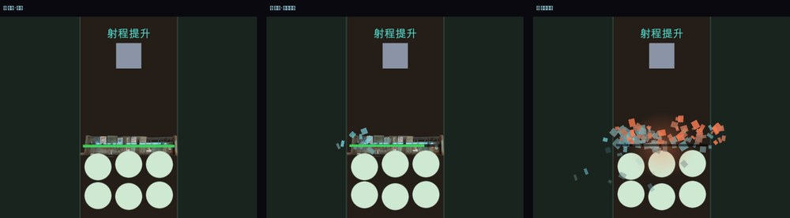
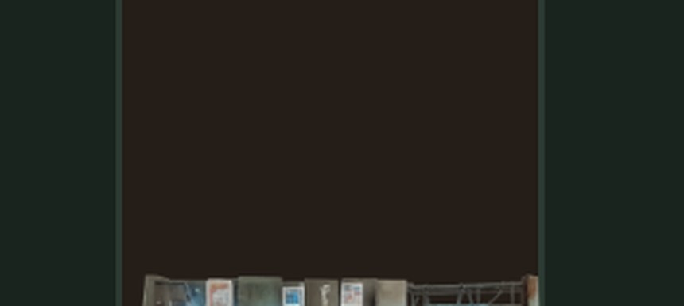
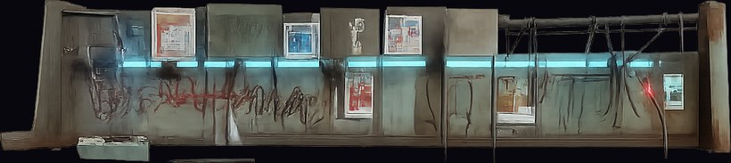
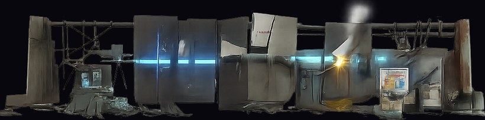
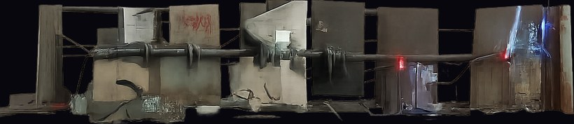

實機畫面

① 完好 ② 被打時碎片噴出 ③ 破防瞬間（護欄消失、大量碎片與爆光）

護欄放大：霓虹燈管、塗鴉、貼紙、雜物堆在遊戲裡讀得出來
- 顯示比例
- 4.46:1，對素材原始 4.46:1 —— 誤差 0.1%，沒有被拉伸壓扁
- 碎片
- 被打一下（18 傷害）噴 11 個；打到破防累計 101 個
- 本輪花費
- $0（沿用 v3 素材 + 既有特效層）
切出來的三段素材

完好 976×219（4.46:1）

半毀 1014×253（4.01:1）

將破 978×212（4.61:1）
- 切換門檻
- HP 100~60% 完好、60~25% 半毀、25~0% 將破、0 隱藏（已被突破）
- 高度
- 由素材自己的長寬比推導，不另外訂數字——訂了就會跟素材脫鉤，換一版就被壓扁
要你決定的
- 目前碎片是程序化色塊（隨機大小、旋轉、拋物線、青藍與暗金屬混色）。手感參數——噴散角度、初速、重力、存活時間、數量隨傷害縮放——都已經調好了。
- 要不要花 $0.4 生一張碎片素材（金屬碎塊／玻璃／電路板殘片）換掉色塊？換的只是 Sr.sprite，上面那些參數完全不用重調。
- 這張碎片素材可重用在：駐守物被打爛、封印箱被打開、殭屍死亡。